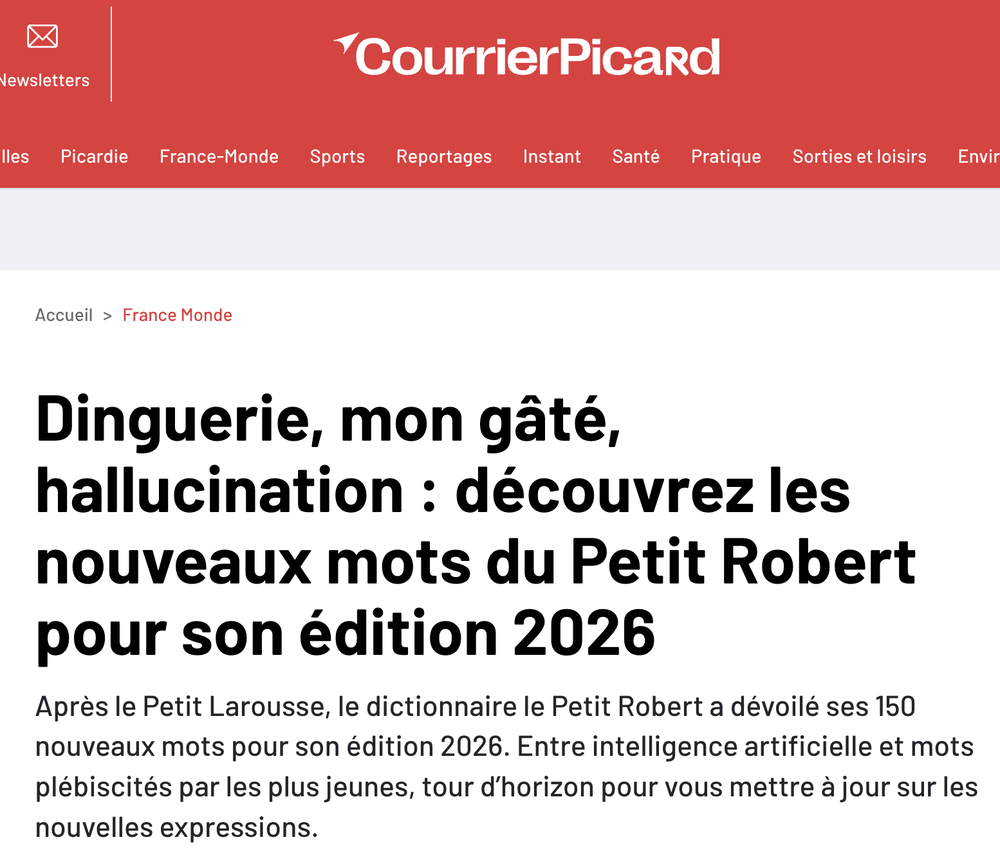
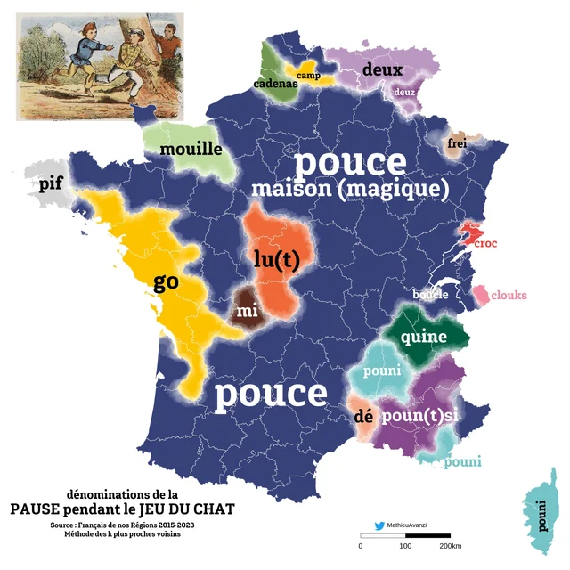
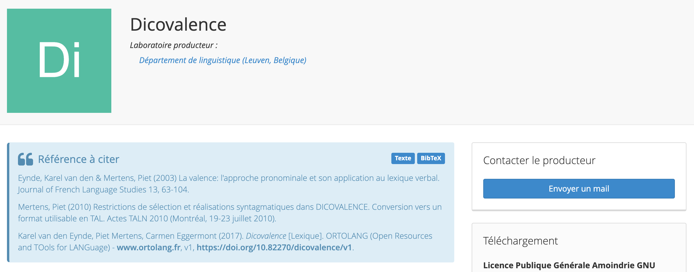
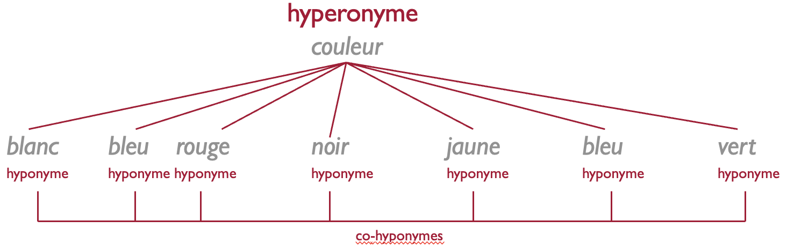
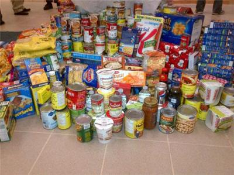
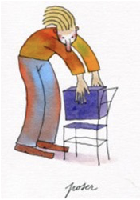
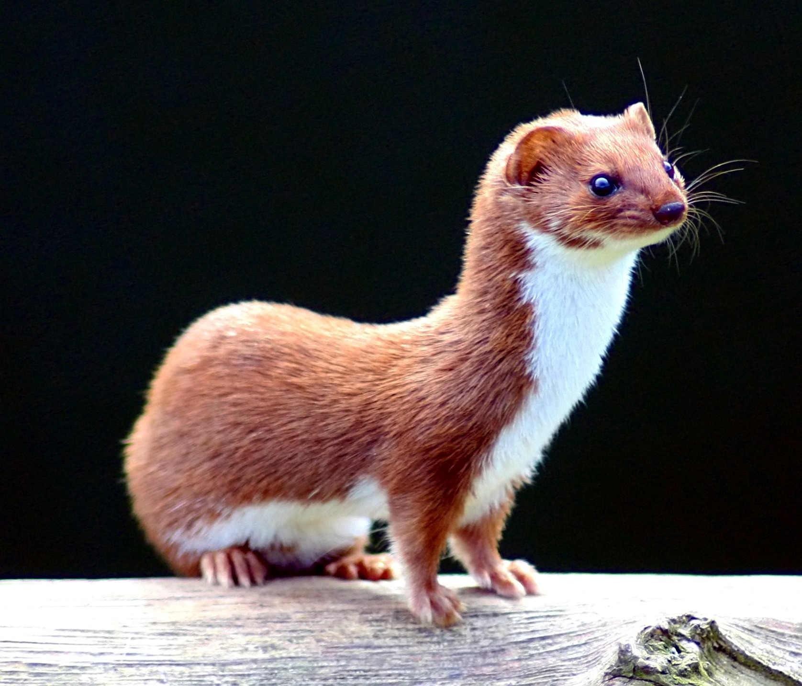
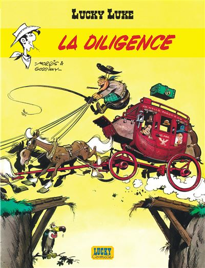
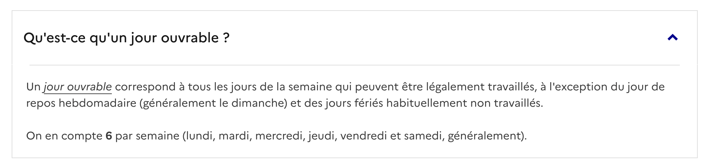

4 Évolutions sémantiques
4.1 Plan
Introduction
Les changements sémantiques selon Bréal
Les changements sémantiques selon Ullmann
Les mécanismes du changement sémantique traditionnels
Exercice
Peut-on expliquer le changement sémantique?
4.2 Introduction
Changement sémantique = changement au niveau du sens codé de la langue

4.2.1 Dinguerie
Origine et sens initial (années 1920) :
Caractère d’une personne ou d’un comportement dingue.
Action réalisée par une personne dingue.
➔ Synonyme familier : folie.
Évolution contemporaine du sens :
Quelque chose d’incroyable…
En positif : une vidéo qui fait le buzz sur les réseaux sociaux.
En négatif : une mésaventure.
Quelque chose d’excellent (sens mélioratif)
Synonyme figuré : tuerie (dont le sens originel est également négatif).
➔ Exemple : « Ce gâteau, c’est une dinguerie ! »
« La linguistique diachronique, c’est une dinguerie »

4.2.2 Gâté
En 2020, le succès phénoménal de la chanson Bande organisée, avec en ouverture le fameux « Oui ma gâtée »

4.2.3 Hallucination
Perception pathologique de faits, d’objets qui n’existent pas, de sensations en l’absence de stimulus extérieur.
- Hallucinations visuelles, auditives
Erreur des sens, illusion.
1. Être le jouet d'une hallucination.
2. Avoir des hallucinations.- 🚨 Résultat incorrect ou trompeur produit par une intelligence artificielle générative, avec une apparence de vérité.

4.2.4 Et si on remontait plus loin dans le temps…
4.2.4.1 Consigne
Retrouvez le sens d’origine en latin pour chacun des mots français ci-dessous, issus de l’évolution phonétique et sémantique du latin au français.
| Mot en latin | Mot en français | Sens du mot en Latin |
| 1. caput | chef | ___________________________ |
| 2. sapere | savoir | ___________________________ |
| 3. ponere | pondre | ___________________________ |
| 4. vivenda | viande | ___________________________ |
| 5. puta | pute | ___________________________ |
4.2.4.2 Corrigé de l’exercice
caput \(\rightarrow\) Tête (le mot “chef” désignait d’abord la tête avant d’évoluer vers le sommet/le dirigeant)
sapere \(\rightarrow\) Avoir du goût / de la saveur (a ensuite évolué vers “avoir du discernement”, puis “savoir”)
ponere \(\rightarrow\) Mettre / Poser (s’est restreint en français au fait de poser des œufs)
vivenda \(\rightarrow\) Vivres / Choses nécessaires à la vie (désignait toute nourriture avant de se restreindre à la chair animale)
puta (ou putta) \(\rightarrow\) Fille / Fillette (terme affectif en latin vulgaire qui a subi une péjoration sémantique)
D’autres exemples
- LATIN : Cantando vado (‘j’avance en chantant’) > FRANÇAIS
- Je vais chantant (‘je suis en train de chanter’)
- ANCIEN FRANÇAIS : Va chanter (‘il s’en va pour chanter’) > FRANÇAIS : Il va chanter (‘il est sur le point de chanter’)
5 Les motivations du changement de sens
5.1 Motivations Générales
Efficacité : > « la réduction des efforts nécessaires pour produire le message et [la] pertinence maximale pour réaliser le but de la communication »
Expressivité : > « l’expression des sentiments, etc. »
Note speaker : - L’efficacité vise à économiser l’effort cognitif tout en maximisant l’influence sur l’interlocuteur (cf. Keller & Blank). - L’expressivité n’est pas toujours le but premier, mais répond au besoin de transmettre des états affectifs ou émotionnels.
5.2 Motivations Particulières
- Expression de nouveaux concepts :
- Citation : « l’expression de nouveaux concepts »
- ➔ Exemple : Périphérique informatique ➔ souris
- Concepts abstraits ou éloignés de la perception :
- Citation : « l’expression de concepts abstraits ou d’autres concepts qui sont plus éloignés de la perception »
- ➔ Exemple 1 : Baisse de tarifs ➔ baisser les prix
- ➔ Exemple 2 : Bas de la montagne ➔ le pied de la montagne
- Point 1 : Lorsqu’une nouvelle technologie apparaît, on puise dans le vocabulaire existant par analogie formelle ou fonctionnelle (ex. souris). - Point 2 : Lien direct avec les métaphores conceptuelles de Lakoff et Johnson (1980). On concrétise le domaine abstrait à l’aide du domaine corporel ou spatial (ex. pied, baisser).
- Changements socio-culturels :
- Citation : « les changements socio-culturels »
- ➔ Exemple : Glissement de l’appellation des repas en français :
- 16ᵉ–17ᵉ s. : dîner / déjeuner (midi) ➔ souper (après-midi)
- 19ᵉ s. à aujourd’hui : déjeuner (midi) ➔ dîner (soir) ➔ création du petit déjeuner (matin) & souper (tard le soir)
- Insister sur le fait que la structure de la société et le rythme des journées modifient l’organisation du lexique. - La synonymie initiale entre dîner et déjeuner a été abandonnée quand les horaires de prise de repas se sont décalés au fil des siècles.
- Scénarios conceptuels :
- Citation : « les relations conceptuelles ou factuelles étroites entre les éléments d’un même scénario conceptuel »
- ➔ Exemple : ‘repousser/protéger’ ➔ défendre (‘interdire’)
- Irrégularités lexicales :
- Citation : « les irrégularités lexicales : elles peuvent inciter les locuteurs à les « corriger » »
- ➔ Exemple : Refonte du verbe latin disjejunare ➔ déjeuner / dîner
- Concepts émotionnellement marqués :
- Citation : « l’expression de concepts émotionnellement marqués (expressivité, tabou) »
- ➔ Exemple : Oiseau échassier ➔ grue (‘prostituée’)
Note speaker : - Point 4 : C’est le glissement métonymique par rapport de cause à effet dans un même contexte. - Point 5 : Corriger des anomalies lexicales par étymologie populaire ou réalignement de paradigmes. - Point 6 : Rôle important des tabous sociaux et de la recherche d’images fortes ou métaphoriques pour parler de sujets sensibles.
6 La propagation du changement de sens
- l’assignation d’un nouevau sens, ce n’est en fait que de l’innovation sémntiqu càd la première étaepe du changement de sens
- pour un changerment réel il faut propagation et que ça s’intègre dans le lexique de la communauté linguistique
6.0.1 Quand un mot est employé avec un nouveau sens :
Groupe social : Il peut d’abord être employé au sein d’un groupe particulier de la communauté.
Variété de langue : Il peut être restreint à une variété spécifique de la langue (ex. l’immédiat communicatif / langue familière).
Diffusion Il peut ensuite se répandre d’une variété à une autre (ex. passer du non-standard au bon usage).

6.0.2 Le cas de travailler
6.0.2.0.1 Le sens d’origine
Concept initial : Travailler signifie à l’origine « SE FATIGUER ».
Sens de référence pour le travail : Le verbe usuel et littéraire pour désigner l’activité était ouvrer.
6.0.2.0.2 13ᵉ s. : L’Innovation
Glissement métonymique : Emploi ad hoc de travailler dans un contexte spécifique.
Scénario conceptuel : Au sein du scénario activé, le concept de fatigue est lié au travail en tant qu’activité fatigante.
Première attestation : Une occurrence isolée avec le sens moderne apparaît à la fin du 13ᵉ siècle dans un texte non littéraire.
6.0.2.0.3 14ᵉ–16ᵉ s. : Première diffusion dans l’immédiat communicatif
- Travailler commence à s’utiliser comme synonyme de ouvrer, mais est cantonné aux variantes non standard (registre familier, spontané).
6.0.2.0.4 2ᵉ moitié du 17ᵉ s. : Adoption dans la distance communicative et généralisation
Travailler fait son entrée dans le « bon usage » (norme standard/littéraire).
Il remplace progressivement ouvrer, qui finit par disparaître du lexique courant.
7
8 Lexicalisation et grammaticalisation
Évolution du suffixe -ment \(\rightarrow\) Grammaticalisation
Origine : Ablatif du nom latin mens, mentis (« esprit, intention ») employé dans des syntagmes libres comme clara mente (« avec un esprit clair »).
Mécanismes :
Désémantisation (axe paradigmatique) : Perte de la valeur nominale abstraite d’« esprit » ou d’« intention ».
Décatégorialisation : Passage d’un nom féminin autonome à un affixe dérivatif.
Coalescence / Agglutination (axe syntagmatique) : Fusion avec la forme adjectivale féminine pour former une seule unité morphologique (ex. claire + -ment \(\rightarrow\) clairement).
Évolution de aujourd’hui \(\rightarrow\) Lexicalisation
Origine : Ancien français au jour d’hui (littéralement « au jour de ce jour », du latin hodie).
Mécanismes :
Perte de compositionalité : Le sens global (« le jour présent ») n’est plus calculable par l’addition de ses composantes grammaticales modernes (au + jour + de + hui).
Univerbation / Opacification : Fusion graphique et phonétique des éléments séparés.
Changement de statut lexical : Réutilisation ultérieure du mot déjà lexicalisé dans le pléonasme contemporain « au jour d’aujourd’hui ».
// espagnol : al día de hoy vs hoy
// italien : oggigiorno vs oggi
8.1 Lexicalisation
Définition 1 (Blank 2001) : Conventionnalisation d’une expression linguistique avec son sens comme élément du lexique d’une langue historique, incluant les développements ultérieurs où des unités déjà lexicalisées changent de statut au sein du lexique.
Définition 2 (Brinton & Traugott 2005) : Évolution d’expressions complexes se transformant en unités du lexique en perdant leur compositionalité et/ou leur structure interne
- ex. au jo(u)r d’hui \(\rightarrow\) aujourd’hui, gens d’armes \(\rightarrow\) gendarme
8.2 Grammaticalisation
Définition selon les critères de Lehmann (1995 [1982]) :
Perte de substance :
Axe paradigmatique : Perte de consistance phonétique et désémantisation.
Axe syntagmatique : Réduction de portée.
NoteDéfinitionAxe Syntagmatique
- Axe horizontal de la combinaison. Il relie des mots présents et alignés successivement dans la chaîne parlée pour former un énoncé cohérent et grammatical.
Axe Paradigmatique
- Axe vertical du choix et de la substitution. Il unit dans la mémoire des mots qui appartiennent à une même catégorie ou qui partagent des affinités de sens ou de forme.
Perte d’autonomie :
Axe paradigmatique : Intégration de l’unité dans un paradigme (accompagnée d’une décatégorialisation).
Axe syntagmatique : Cohésion syntaxique plus forte, coalescence, clitisation, agglutination.
Perte de variabilité :
Axe paradigmatique : L’expression devient obligatoire.
Axe syntagmatique : Fixation de l’ordre syntaxique.
8.2.1 Exemple : Formation du futur simple en français :
La périphrase latine [\(infinitif + habere\)] illustre ces paramètres :
Substance & autonomie : habere subit une réduction phonétique, perd son sens concret de possession (désémantisation) et sa catégorie de verbe autonome pour devenir une désinence verbale intégrée au paradigme des temps.
Portée & cohésion : Réduction de portée (de verbe principal à désinence) et coalescence complète avec l’infinitif.
Variabilité & ordre : Fixation de l’ordre (infinitif + habere, alors que l’ordre habere + infinitif était aussi possible en latin) et sélection obligatoire parmi les expressions du futur.
Définition par l’extension des contextes (Himmelmann 2004).
L’accent est mis sur l’extension des contextes d’emploi des constructions, et non plus sur la réduction de portée syntaxique (ce qui permet d’inclure les marqueurs discursifs sans créer la notion séparée de pragmaticalisation).
Les 3 types d’extension (Himmelmann 2004) :
Host-class expansion : Élargissement de la classe des mots combinables avec la construction.
Extension des contextes syntaxiques : Intégration dans de nouvelles structures grammaticales.
Extension des contextes sémantico-pragmatiques : Gain de nouvelles fonctions de sens ou de discours.
Exemple : Formation du futur périphrastique (aller + infinitif)
Étape 1 (Host-class expansion) : Élargissement progressif de la classe des verbes associés (ne se limite plus aux actions nécessitant un déplacement physique).
Étape 2 (Contextes syntaxiques) : Emploi dans des structures de montée (ex. « Il va pleuvoir », où le pronom impersonnel il dépend en réalité de pleuvoir).
Étape 3 (Contextes sémantico-pragmatiques) : Utilisation en français contemporain comme alternative au futur synthétique.
Exemple : Évolution de la locution en fait
Origine latine (factum) employé comme complément d’une préposition (en + fait).
Étape 1 (Host-class expansion) : Transformation en adverbe propositionnel à valeur plutôt épistémique.
Étape 2 (Contextes syntaxiques) :
Passage à un rôle de connecteur et d’adverbe à sens pragmatique (accentue la position du locuteur).
Acquisition d’un sens intersubjectif.
Étape 3 (Contextes sémantico-pragmatiques) : Développement d’un sens pragmatique plus vague en français moderne.
Introduction de la notion de constructionnalisation (Traugott & Trousdale 2013).
Fondement : Issue de la grammaire de construction (Goldberg 2006). La langue est un réseau de constructions (mots, patrons morphologiques, structures syntaxiques).
Changement de paradigme : Abolition de la frontière étanche entre lexique et grammaire (et donc entre grammaticalisation et lexicalisation) \(\rightarrow\) Tout est constructionnalisation.
Degrés de schématicité :
Substantif (non schématique) : Mots simples (aucune variable).
Partiellement schématique : Patrons morphologiques (ex. \(Adj_{fém} + -ment\)).
Complètement schématique : Constructions syntaxiques (composées de variables).
Puisque la langue ne comporte que des constructions et que celles-ci correspondent à ce qu’on appelle traditionnellement des mots, des idiomes et des constructions syntaxiques, il n’y a plus de distinction nette entre lexique et grammaire
9 Les mécanismes du changement sémantique traditionnels
9.1 Le changement métonymique
Mise en situation : Devinez le sens de l’unité ancienne !
Latin classique
coxa\(\rightarrow\) cuisse (Français moderne)Latin
vigilia\(\rightarrow\) veille (Français moderne)Latin classique
testimonium\(\rightarrow\) Ancien français tesmoinAncien français
prison\(\rightarrow\) la peine d’être emprisonné (Français moderne)Latin
focus\(\rightarrow\) feu (Français moderne)
MÉCANISMES DU CHANGEMENT SÉMANTIQUE TRADITIONNELS
La Métonymie
Définition traditionnelle : Emploi d’une expression pour une autre sur la base de la contiguïté des référents.
Approche par la sémantique cognitive :
Utilisation de la notion de scénario conceptuel (frame) : structure de concepts reliés entre eux.
La contiguïté correspond aux relations entre les concepts du scénario (relations engynomiques selon Koch 2001c).
Les 3 formes de glissements métonymiques au sein d’un cadre (Koch 2016) :
Figure / Ground (Premier plan / Arrière-plan) : Un élément est repoussé à l’arrière-plan (ground), tandis qu’un élément contigu passe au premier plan (figure).
- Exemple :
coxa(« hanche ») \(\rightarrow\) cuisse.
- Exemple :
Élément \(\rightarrow\) Scénario global : Un élément du cadre passe à l’arrière-plan au profit de la montée du scénario dans sa totalité.
- Exemple : Évolutions du terme bureau.
Scénario global \(\rightarrow\) Élément : Le glissement s’opère du scénario global vers un élément spécifique.
- Exemple : Évolution du latin
focus(« foyer » \(\rightarrow\) « feu »).
- Exemple : Évolution du latin
9.1.1 La subjectivation
Définitions théoriques principales :
Selon Traugott (1989, 1995b, 1999) :
Objectivité : Réfère à un événement dans le monde extra-linguistique.
Subjectivité : Représente la perspective ou l’engagement du sujet parlant dans l’événement de parole.
Mécanisme : Repose sur un glissement métonymique au sein d’un même scénario conceptuel (ex. l’ACTIVITÉ COMMUNICATIVE).
Selon Langacker (1999) :
Redéfinition comme un changement de perspective.
Le sujet de conscience, initialement repoussé à l’arrière-plan d’une scène conçue d’abord objectivement, remonte au premier plan pour imposer son point de vue.
Exemple 1 : Le verbe observer
Sens d’origine « objectif » : « Considérer avec attention » (perception visuelle ou mentale).
Sens subjectivé : « Faire remarquer » (acte de parole).
Analyse (Modèle de Traugott) : Le verbe s’intègre au scénario conceptuel de l’ACTIVITÉ COMMUNICATIVE. Ce scénario relie la perception du monde à l’affirmation. Le passage du sens objectif au sens subjectif s’effectue par un glissement métonymique au sein de ce même cadre.
Exemple 2 : La préposition après
Sens d’origine « objectif » : Signal de la postériorité dans le temps.
Sens subjectivé : Localisation spatiale derrière un point de repère (ex. « La cliente habitait tout en haut de la côte, après l’église »).
Analyse (Modèle de Langacker) : L’interprétation spatiale nécessite que le sujet conçoive la scène en adopting le point de vue d’un observateur qui se déplace fictivement dans l’espace. Le concept objectif de postériorité temporelle est réinterprété à travers ce mouvement virtuel selon la perspective du sujet.
9.1.2 La délocutivité
Processus par lequel une expression linguistique est transformée pour désigner ou accomplir un acte illocutoire.
Constitue une forme de subjectivation au sens de Traugott, car l’expression s’ancrant dans la situation de parole et dans l’intention du locuteur.
Repose sur un glissement métonymique fondé exclusivement sur la contiguïté entre l’énonciation de l’expression et le type d’acte de langage accompli (Koch 2012a, Blank 1997).
Exemple d’analyse : Le mot latin …
un synonyme pour …
Sens d’origine (Objectif) : Adverbe de quantité signifiant « deux fois ».
Sens délocutif (Subjectivé) : Exclamation/interjection de demande (« Bis ! ») signifiant « demandez un da capo / recommencer une performance ».
Analyse :
Mécanisme : L’adverbe désignant la répétition (« deux fois ») vient à désigner l’acte d’énonciation lui-même et l’intention du public de faire répéter un morceau.
Contiguïté métonymique : Le glissement s’appuie sur la contiguïté directe entre le cri « Bis ! » proféré après une chanson et le type d’acte illocutoire d’injonction/demande de répétition.
Un autre exemple

9.1.3 Les structures valentielles
Nombre d’actants qu’un verbe est susceptible de régir.
Monovalent : Demande un seul actant, le sujet
- ex. : il pleut, il dort.
Bivalent : Demande deux actants, le sujet et un objet direct ou indirect
- ex. : je mange une pomme, je pense à quelqu’un.
Trivalent : Demande trois actants, comme le sujet, un objet direct et un objet indirect
- ex. : je donne quelque chose à quelqu’un
Le dictionnaire de valence DICOVALENCE est une ressource informatique qui répertorie les cadres de valence de plus de 3700 verbes simples du français. Par cadre de valence on entend traditionnellement le nombre et la nature des compléments valenciels du verbe, y compris le sujet, avec mention de leur fonction syntaxique.

Les structures valentielles d’un verbe correspondent aux scénarios conceptuels (frames) associables à son action.
Une modification dans les restrictions sélectionnelles (les arguments qu’un verbe sélectionne) ou l’incorporation d’un instrument produit des glissements métonymiques au sein de ce scénario.
Exemple d’analyse : Le verbe panser
Ancien français : Signifiait « soigner, traiter (un malade) ».
Français contemporain : Signifie « soigner (une partie du corps lésée) en y appliquant un pansement ».
Mécanisme du changement :
Métonymie Partie-Tout (Synecdoque) : Le complément d’objet direct initial (le malade) est remplacé par la partie du corps.
Incorporation de l’instrument : Le moyen stéréotypique du soin (le pansement) est directement intégré dans le sens du verbe.
L’Auto-conversion (ou inversion de la perspective d’actants)
Définition théorique :
Possibilité pour un même terme (verbale ou nominale) d’exprimer deux perspectives différentes ou opposées au sein d’un seul et même scénario conceptuel.
Entraîne une réorganisation ou une permutation de l’ordre des actants dans la syntaxe.
Exemple 1 : Louer
Latin originel (
locare) : « Placer », puis « donner à loyer ».Évolution (depuis l’Ancien Français, ex. Chanson de Roland) : Extension au sens opposé « prendre à loyer ».
Explication métonymique : Dans des contextes ambigus du point de vue de l’interlocuteur (ex. « chambre à louer »), la perspective de l’action s’est inversée entre le bailleur et le preneur.
Exemple 2 : Hôte
- Mécanisme : Auto-conversion nominale désignant à la fois celui qui reçoit (« l’invitant ») et celui qui est reçu (« l’invité ») au sein du même scénario de l’HOSPITALITÉ.
9.2 Le changement métaphorique
Domaine source → Domaine cible : Projection partielle des connaissances d’un domaine d’expérience concret (source) vers un domaine plus abstrait ou nouveau (cible).
Nature des connaissances transférées : Ce ne sont pas de simples traits sémantiques, mais des connaissances du monde (extra-linguistiques) issues de nos scénarios conceptuels.
Unidirectionnalité : Tendance générale à utiliser le concret et l’expérience corporelle pour appréhender et exprimer l’abstrait.
Métaphore vs Métonymie :
Métaphore : Relation de similarité mettant en rapport deux scénarios conceptuels différents. La similarité peut être construite lors de l’acte d’interprétation.
Métonymie : Relation de contiguïté opérant au sein d’un seul et même scénario conceptuel.
Types de changements métaphoriques et exemples d’analyse
1. Métaphores par comparaison / Catachrèses (Création de dénominations) :
Exemple 1

Optical Computer Mouse at ₹ 300/piece | Coimbatore | ID: 10097223062 Source : L’animal.
Cible : L’appareil de pointage informatique.
Analyse : Transfert basé sur des caractéristiques de l’apparence externe (forme globale, câble ressemblant à une queue).
Exemple 2

Chevalet (peinture) — Wikipédia Source : Ancien français chevalet (« petit cheval »).
Cible : Support en bois (Français moderne).
Analyse : Catachrèse attribuant un nom à un objet inanimé par analogie de forme ou de fonction portante avec l’animal.
Exemple 3

Pinkfong GIFs on GIPHY - Be Animated Source : L’animal prédateur.
Cible : « Personne cupide et impitoyable en affaires ».
Analyse : Le transfert s’appuie uniquement sur un sous-ensemble prototypique du domaine source (l’image de l’animal agressif et dangereux), en ignorant les espèces non dangereuses. ```
2. Métaphores basées sur la cooccurrence expérientielle (Métaphores primaires) :
Exemple

Monter :
Évolution : De l’Ancien Français monter (« se déplacer du bas vers le haut ») au Français moderne « les prix montent ».
Analyse : Repose sur la métaphore conceptuelle LE PLUS EST EN HAUT. Il n’y a pas de similarité physique entre quantité et hauteur, mais une cooccurrence régulière dans l’expérience (ex. remplir un récipient fait monter le niveau physique).
9.3 Transfert co-hyponymique

Changements sémantiques « horizontaux » s’effectuant entre deux éléments situés au même niveau taxinomique.
Les deux termes ne sont ni hyponymes, ni synonymes, ni antonymes l’un de l’autre, mais sont tous deux subordonnés au même concept superordonné (hyperonyme).
Distinction Mécanisme vs Motivation : Le transfert co-hyponymique constitue le mécanisme formel du changement, tandis que l’euphémisme, la péjoration ou les changements d’environnement fournissent les motivations pragmatiques (Blank 1997).
Exemple 1
Origine (Latin) :
sorex(« musaraigne »).Évolution (Français) : Souris.
Hyperonyme commun : « Petit rongeur / mammifère ».
Analyse : Glissement horizontal entre deux espèces proches partageant le même concept superordonné.

Exemple 2
Origine (Français) : Framboise.
Évolution (Créole réunionnais) : Frãmbwaz (« myrtilles rouges »).
Hyperonyme commun : « Petit fruit rouge ».
Analyse : Transfert co-hyponymique motivé par le changement de cadre de vie et la recherche d’une dénomination pour une plante locale.
Exemple 3
Origine : Craie (« pièce de craie pour écrire »).
Évolution (XVIe s.) : Crayon (instrument d’écriture en graphite).
Hyperonyme commun : « Instrument pour écrire ».
Analyse (Gévaudan 2007) : Pas de ressemblance physique entre la craie et le graphite, mais un glissement co-hyponymique fondé sur une identité de fonction.

Exemple 4
Origine (Latin tardif / Ancien français) :
inodiare(« être odieux ») \(\rightarrow\) Ennuyer en AF (« tourmenter, importuner »).Évolution (Français moderne) : S’ennuyer / Ennuyer (« contrarier, causer du souci léger »).
Hyperonyme commun : « Causer une affectation psychologique négative ».
Analyse : Glissement horizontal d’une émotion forte vers une émotion atténuée, dont le mécanisme est le transfert co-hyponymique et la motivation est l’euphémisme.

9.4 La généralisation et la spécialisation
Généralisation : Le mot devient un hyperonyme de lui-même (son extension s’élargit, le sens perd des traits spécifiques).
Spécialisation : Le mot devient un hyponyme de lui-même (son extension se réduit, le sens intègre un trait spécifique supplémentaire).
1. Généralisation (Passage au niveau hyperonymique supérieur) :
Pigeon
Ancien Français : Signifiait uniquement « jeune pigeon ».
Français moderne : « Pigeon en général » (sans précision d’âge).

Arriver
Latin (
adripare) : « Arriver à la rive ».Français moderne : « Arriver (n’importe où) ».

Le Swimrun, nager ou courir ? Les deux mon capitaine - RTBF Actus
- 2. Spécialisation (Passage au niveau hyponymique inférieur) :
Viande
Moyen Français : Signifiait « nourriture / vivres » en général.
Français moderne : « Chair d’un animal ».

Pondre
Latin (
ponere) : « Mettre, poser ».Français moderne : « Poser des œufs ».

Étude de cas complexe : L’évolution en chaîne de Pigeon
Spécialisation initiale :
Latin
pipio(« jeune oiseau ») → Ancien Françaispijon(« jeune pigeon »).Analyse : Intégration d’un élément supplémentaire par contiguïté au sein du scénario conceptuel du MARCHÉ (pigeons consommables, dressables ou vendus sur les marchés).
Généralisation subséquente :
« Jeune pigeon » → « Pigeon comestible » → « Pigeon ».
Analyse : Remontée du niveau taxinomique inférieur au niveau supérieur avec suppression des relations de contiguïté contextuelles, mettant au premier plan les similarités co-taxinomiques.
Motivations pragmatiques (ex. Euphémisme) :
Exemple : Membre
Latin originel : Toute partie du corps qui pend du tronc.
Évolution (par spécialisation / euphémisme) : Emploi restreint pour désigner spécifiquement le membre viril.
9.5 Les changements sémantiques basés sur le contraste
Le Changement Anti-phrastique (Koch 2016, Blank 1997)
Changement sémantique fondé sur une relation de contraste au niveau des connotations d’un mot.
Souvent motivé par l’euphémisme afin de contourner un tabou lié au référent désigné.
Belette
Ancien français : Mostoile (terme d’origine pour désigner l’animal).
Évolution : Belete (littéralement « petite belle »).
Dans les sociétés agricoles, la belette était perçue comme un animal nuisible causant la perte des volailles. L’attribution du qualificatif mélioratif « petite belle » visait à flatter l’animal de manière superstitieuse pour éviter ses dégâts.

Le Changement Auto-antonymique
Processus sémantique rare par lequel un mot en vient à prendre le sens de son propre antonyme.
Se distingue de l’auto-conversion (hôte) : l’auto-conversion permute deux angles d’un même scénario d’actants, tandis que l’auto-antonymie attribue deux valeurs sémantiques opposées/contradictoires au même terme.
Sacré
Latin originel (
sacer) : « Saint, auguste, consacré aux dieux ».Français moderne : Conservé au sens de « holy/saint », mais étendu au sens de « maudit, détestable » (ex. « Un sacré pétrin »).
Analyse : Ce glissement s’est développé au sein d’expressions taboues ou de jurons, où l’évocation du domaine sacré s’est chargée d’une valeur négative par inversion pragmatique.
9.6 Autres types de changement de sens
9.6.1 L’intensification et l’affaiblissement de sens
L’intensification et l’affaiblissement ne constituent pas des mécanismes de changement sémantique autonomes.
Ils doivent être analysés comme des effets ou conséquences découlant des mécanismes fondamentaux (métaphore, métonymie, antiphrase, transfert co-hyponymique).
Analyse de cas : L’évolution de belette
Mécanisme initial : Changement antiphrastique (par motivation euphémique).
Effet 1 (Affaiblissement) : L’emploi de belete (« petite belle ») pour masquer la réalité de l’animal nuisible (mostoile) produit un affaiblissement sémantique par dissimulation.
Effet 2 (Intensification) : Une fois belette devenu le terme standard, la charge sémantique s’intensifie à nouveau pour désigner pleinement le référent.
Conclusion : L’affaiblissement et l’intensification sont les effets pragmatiques et diachroniques du processus antiphrastique originel, et non sa cause ou son mécanisme structurel.
9.6.2 De l’ellipse à l’absorption
Conception traditionnelle (ex. Ullmann) : L’ellipse est perçue comme un transfert de sens entre deux lexèmes en vertu de leur contiguïté syntagmatique dans un groupe nominal (carrosse de diligence \(\rightarrow\) diligence).
Critique de Blank (1997) : L’ellipse n’est pas un mécanisme de changement sémantique direct du groupe composé vers le terme simple. Le sens de la locution d’origine (carrosse de diligence) ne change pas en soi.
Diligence
Mécanisme réel : Le terme simple (diligence) acquiert un nouveau sens par association métonymique avec la structure complexe complète dans laquelle il figurait.
Double identité sémantique du terme simple :
Sens d’origine : « Activité empressée, rapidité dans l’exécution ».
Nouveau sens acquis par absorption : « Voiture tirée par un ou des chevaux ».
Conclusion : Le changement sémantique s’établit entre les deux sens du terme simple et non entre le terme composé et le mot abrégé. Blank propose donc le concept d’absorption pour décrire précisément ce glissement de sens au niveau de la lexie individuelle.

9.6.3 L’étymologie populaire
Statut théorique (Blank 1997, Koch 2016) :
Conception traditionnelle (ex. Ullmann) : Traitée comme un mécanisme autonome de changement sémantique fondé sur la réinterprétation de la forme d’un mot par analogie avec un autre terme phonétiquement proche.
Analyse cognitive / métonymique : L’étymologie populaire n’est pas un mécanisme isolé, mais un changement métonymique qui s’opère au sein d’un même scénario conceptuel à la suite de la perte de motivation de la forme d’origine.
- Exemple d’analyse : L’adjectif ouvrable
Jour ouvrable
Forme & Sens : Dérivé du verbe ouvrer (« travailler »).
Définition : « Consacré au travail ».
Changement : Disparition du verbe ouvrer du lexique actif, rendant le mot opaque.
Réinterprétation : Rapprochement phonétique et sémantique avec le verbe ouvrir.
Nouveau sens : « Jour où les magasins/bureaux sont ouverts ».

Changements de sens populaires
9.7 Introduction
Changement sémantique = changement au niveau du sens codé de la langue
- LATIN : Cantando vado (‘j’avance en chantant’) > FRANÇAIS
-
Je vais chantant (‘je suis en train de chanter’)
- ANCIEN FRANÇAIS : Va chanter (‘il s’en va pour chanter’) > FRANÇAIS : Il va chanter (‘il est sur le point de chanter’)
9.8 Changement sémantique
• Étude du changement sémantique ~ sémantique historique (Michel Bréal, \(19^e\)-\(20^e\) s., et Stephen Ullmann, \(20^e\) s.). • Époque de Bréal : réalisation croissante que le sens des mots change. • Bréal est le premier à s’intéresser aux « lois intellectuelles » (les mécanismes cognitifs) qui guident l’évolution sémantique :
« Je ne crois pas cependant me tromper en disant que l’histoire du langage, ramenée à des lois intellectuelles, est, non seulement plus vraie, mais plus intéressante: il ne peut être indifférent pour nous de voir, au-dessus du hasard apparent qui règne sur la destinée des mots et des formes du langage, se montrer des lois correspondant chacune à un progrès de l’esprit. » (Bréal 1897/1924: 257-258)
9.9 Plan
• Introduction • Les changements sémantiques selon Bréal • Les changements sémantiques selon Ullmann • Les mécanismes du changement sémantique traditionnels • Exercice • Peut-on expliquer le changement sémantique?
9.10 Plan
Introduction
Les changements sémantiques selon Bréal
- Péjoration - mélioration – affaiblissement - nivellement - restriction - élargissement – métaphore – épaississement - raccourcissement – contagion
Les changements sémantiques selon Ullmann
Exercice
Peut-on expliquer le changement sémantique?
9.10.1 Péjoration vs mélioration
Voici un … POLICE NATIONALE
9.10.1.1 Connotation vs dénotation
| Policier | Flic | |
| Dénotation | [dénotation identique] | [dénotation identique] |
| Connotation | Neutre | Négative |
9.10.2 Péjoration vs mélioration
Voici un(e) … [6720 RD 34]
9.10.2.1 Connotation vs dénotation
| Voiture | Tacot | |
| Dénotation | [dénotation identique] | [dénotation identique] |
| Connotation | Neutre | Négative |
9.11 Péjoration
Le mot s’utilise de plus en plus avec une connotation négative, si bien que son sens évolue progressivement vers un sens négatif :
- fr. amateur ‘personne qui aime qqch’ > ‘personne qui manque de professionalisme’
« La péjoration est une disposition très humaine qui nous porte à voiler, à atténuer, à déguiser les idées fâcheuses, blessantes ou repoussantes » (Bréal 1897/1924: 100)
« Pour désigner le choquant, nous utilisons, par euphémisme, des mots sans connotation particulière, mais qui subissent par la suite une péjoration. »
9.12 Péjoration
Autres exemples :
lat. mentire ‘imaginer’ > fr. mentir
angl. villain ‘personne qui travaille dans une villa ou une propriété agricole’ > ‘fermier, homme de basse classe’ > ‘homme dépravé, criminel’
9.13 Mélioration
• Le mot s’utilise de plus en plus avec une connotation positive, si bien que son sens évolue progressivement vers un sens positif (= amélioration) :
- lat. casam ‘hutte, cabane’ > it. et esp. casa ‘maison’
« La politesse a ses raffinements singuliers, l’affection a de curieux détours qui font que des termes à signification défavorable perdent ce qu’ils avaient de fâcheux. L’amitié, comme si elle était en peine d’adjectifs appropriés, change le blâme en éloge et fait du reproche une louange plus savoureuse » (Bréal 1897/1924: 102)
9.14 Mélioration
Autres exemples :
• lat. caballum ‘une rosse, un mauvais cheval ; un cheval vieux, malade ou sans vigueur’ > fr. cheval
• lat. villam ‘ferme’ > fr. ville
9.15 Euphémisme vs dysphémisme
- • Mécanismes liés à la péjoration et à la mélioration. • Euphémisme
-
atténuation ou adoucissement d’un sens considéré comme désagréable (« remplacement par tabou »).
fr. troisième âge ou sénior pour vieux et vieillesse
• Dysphémisme : durcissement ou exagération d’un sens négatif ou désagréable.
angl. loony bin pour mental hospital ‘maison/asile de fous’: ‘fou, mentalement dérangé’ + ‘conteneur, espace fermé pour stocker’
9.16 Exercice
Péjoration, mélioration, euphémisme ou dysphémisme ?
• fr. commissaire pour s’adresser à n’importe quel agent de police • lat. cohortem ‘enclos, cour d’une ferme, basse-cour’ > fr. cour, court ‘la cour royale’ • fr. une femme qui pèse beaucoup > une femme robuste • fr. il ne faut pas pousser mémé dans les orties pour ‘il ne faut pas aller trop loin’ • fr. patron pour s’adresser au garçon dans un restaurant • lat. puta ‘fille’ > fr. pute ‘prostituée’ • fr. mettre à la porte qq’un pour licencier qq’un
9.17 Affaiblissement
Le mot perd progressivement sa force sémantique et évolue vers un sens plus neutre.
- fr. tourmenter ‘supplicier, torturer’ > ‘tracasser, préoccuper’
L’affaiblissement résulte de l’emploi excessif d’un mot sémantiquement très marqué pour des choses moins marquées.
9.18 Nivellement
• Le mot change progressivement de registre. Un mot appartenant à un registre élevé peut devenir neutre et inversement, un mot appartenant à un registre moins élevé peut devenir neutre ou même s’intégrer dans un registre plus élevé.
- fr. mon seigneur : titre réservé aux gentilshommes > titre utilisé pour n’importe quel homme adulte + évolution vers monsieur
9.19 Restriction sémantique
• Le mot ayant un sens général s’utilise de plus en plus dans des contextes particuliers, si bien qu’il en arrive à s’approprier un sens plus spécifique (~ réduction sémantique, spécialisation sémantique).
- lat. fenum ‘produit’ > fr. foin (contexte agricole)
« Si, pour une cause quelconque, le mot vieillit dans toutes ses acceptions, sauf une seule, il s’en va aux âges futurs avec la valeur unique qui lui est restée » (Bréal 1897/1924: 111).
9.20 Restriction sémantique
Autres exemples :
lat. vivenda ‘vivres’ > fr. viande
lat. ponere ‘mettre’ > fr. pondre
9.21 Élargissement sémantique
• Le mot étend progressivement son champ d’application : son sens devient plus large et moins spécifique (= extension sémantique, désémantisation, généralisation, appauvrissement).
fr. gain ‘récolte agricole’ > ‘profit, bénéfice’
lat. panarium ‘panier à pain’ > fr. panier
9.22 Restriction et élargissement sémantiques
• Selon Bréal, les deux mécanismes ont une origine cognitive commune :
« Un fait qui domine toute la matière, c’est que nos langues […] sont condamnées à un perpétuel manque de proportion entre le mot et la chose. L’expression est tantôt trop large, tantôt trop étroite. » (Bréal 1897/1924: 107).
• > idée plus générale : le sens des mots change continûment, car le monde extralinguistique change continûment ; c.-à-d. : le changement sémantique reflète et suit le changement extralinguistique, de par l’essence même du mot comme une association signifiant – signifié.
• Vu que le mot saussurien est une association forme-sens unique, le changement sémantique conduit-il à une nouvelle association unique ou à une adaptation d’une association unique existante ? Autrement dit : le résultat est-il une situation de polysémie ou de homonymie ?
9.23 Métaphore
• Le mot reçoit un nouveau sens par une analogie structurelle avec l’ancien sens (« la vue d’une similitude entre deux objets, deux actes, la fait naître », Bréal 1897/1924: 124)
« Ta chambre est une porcherie. »
lat. sapere ‘percevoir par le goût’ (cf. fr. saveur) > savoir
9.24 Épaississement sémantique
• Le mot qui a un sens abstrait développe progressivement un sens plus concret (vs une métaphore, qui va généralement du concret à l’abstrait).
- lat. manere ‘rester, demeurer’ > mansio ‘lieu de séjour, halte’ > fr. maison
9.25 Raccourcissement
Dans un groupe de mots qui sont fréquemment associés, tous les mots sauf un seul peuvent disparaître alors que leur sens est absorbé par le mot qui reste (= ellipse).
angl. fall of leaves ‘chute des feuilles’ > fall ‘automne’
fr. ville capitale > capitale
fr. journal hebdomadaire > hebdomadaire
all. Vice-Pferd ‘substitut du cheval’ > néerl. fiets ‘vélo’
9.26 Contagion
Dans un groupe de deux mots fréquemment associés, un mot peut absorber le contenu sémantique de l’autre, avec maintien de ce deuxième mot. Exemple: l’intensificateur dans la première partie du cycle de Jespersen.
- jeo ne dis \(\rightarrow\) je ne dis pas \(\rightarrow\) je dis pas
9.27 Bilan
La classification de Bréal a ses mérites: • C’est une première tentative de classifier les évolutions sémantiques (> volonté de systématiser). • La démarche est moderne : il tente de dégager des « lois intellectuelles » sous-jacentes, ce qui fait de lui un cognitiviste avant la lettre. • Il a des intuitions très justes sur la pertinence de la métaphore, qui est considérée aujourd’hui comme le mécanisme de changement sémantique le plus important.
9.28 Bilan
Mais la classification de Bréal pose également des problèmes: • Certains mécanismes se recoupent, si bien qu’il est parfois difficile de distinguer entre deux ou plusieurs mécanismes (par ex. affaiblissement vs élargissement). • Les mécanismes ne sont pas toujours bien définis (par ex. épaississement). • Elle donne souvent lieu à des situations bizarres. Selon Bréal :
angl. smart ‘tranchant’ > ‘vif, spirituel’ = mélioration
lat. acumen ‘pointe’ > ‘finesse, intelligence’ = métaphore
Pourquoi pas 2x mélioration ou 2x métaphore?
9.29 Plan
• Introduction • Les changements sémantiques selon Bréal • Les changements sémantiques selon Ullmann • Les mécanismes du changement sémantique traditionnels • Exercice • Peut-on expliquer le changement sémantique?
9.30 La classification de Ullmann
• Causes du changement sémantique
Linguistiques – historiques – sociales – psychologiques – influence étrangère – besoin d’un nouveau mot • Classes de changements sémantiques
Métaphore – métonymie – étymologie populaire – ellipse • Conséquences du changement sémantique
Extension – restriction – péjoration – amélioration
9.31 Causes linguistiques
Un mot change de sens suite à sa cooccurrence répétée avec un autre mot dont il absorbe une partie du sens. \(\pm\) contagion de Bréal.
- jeo ne dis \(\rightarrow\) je ne dis pas \(\rightarrow\) je dis pas
9.32 Causes historiques
• Un mot change de sens suite à l’évolution des artefacts, des institutions, des idées ou des concepts scientifiques. • Dû au conservatism des langues, le même mot est conservé.
- lat. carrus > angl. car
9.34 Causes psychologiques
Un mot change de sens suite à des facteurs émotionnels et à des tabous (euphémisme, dysphémisme).
Maintien du mot avec un changement sémantique :
fr. seigneur ‘noble de haut rang’ > nom donné à Dieu
fr. patron pour s’adresser au garçon dans un restaurant
fr. commissaire pour s’adresser à n’importe quel agent de police
Abandon du mot source et remplacement par un mot anodin :
aveugle > non-voyant
une femme qui pèse beaucoup > une femme robuste
9.35 Influence étrangère
Un mot change de sens suite à l’imitation d’un changement sémantique déjà réalisé dans une autre langue.
- angl. to realize ‘comprendre, se rendre compte’ > fr. réaliser ‘achever, accomplir’ > ‘comprendre, se rendre compte’
9.36 Besoin d’un nouveau mot
• Un mot change de sens suite à l’apparition d’un nouvel objet ou d’une nouvelle idée.
- lat. carrus > angl. car
Autres options dans ce cas:
• Création d’un nouveau mot :
angl. iPhone, iPad, fr. instagrameur, … • Emprunt à d’autres langues :
fr. iPhone, paella, spaghetti, …, néerl. computer, …
9.37 Classes de changements sémantiques
| Similarité | Contiguïté | |
| Sens | Métaphore | Métonymie |
| Forme | Étymologie populaire | Ellipse |
9.38 Métaphore
- • Changement sémantique basé sur une similarité de sens. • Quatre types
Métaphore anthropomorphique :
la bouche de métro
la tête du cortège
Métaphore animalière :
Il est rusé comme un renard.
Il a la chair de poule.
Il est têtu comme un âne.
Métaphore allant du concret à l’abstrait :
- brillant ‘lumineux, étincelant’ > ‘doué’
Métaphore synesthésique :
Il a une voix chaude.
Je croyais entendre la clarté de la lune chanter dans les bois. (Chateaubriand)
9.39 Métonymie
• Changement sémantique basé sur la contiguïté des sens source et cible (les deux sens sont présents dans le contexte). • Quatre types de métonymie :
Métonymie spatiale :
- lat. coxa ‘hanche’ > fr. cuisse
Métonymie temporelle :
- fr. collation ‘conférence du soir des moines’ > ‘repas suivant la conférence’
Partie > tout :
fr. blouson noir ‘vêtement’ > ‘personne qui le porte’
fr. casque bleu ‘vêtement’ > ‘personne qui le porte’
Inventeur > invention / découvreur > découverte / créateur > création, … :
fr. ampère, watt < André Ampère, James Watt
Il a acheté un Picasso < Pablo Picasso
Il a acheté une Citroën < marque de voitures Citroën
Il boit du champagne < Champagne
9.40 Étymologie populaire
• Les locuteurs attribuent à un mot un autre étymon que celui qu’il a sur la base d’une ressemblance formelle.
fr. forain ‘personne itinérante qui exerce son activité dans des foires’ < lat. feria ‘vacances, repos, loisir’ > fr. foire
- \(\neq\) étymon: fr. forain > lat. foris ‘dehors’ comme adjectif dans marchand forain ‘marchand sans boutique, marchand ambulant’
fr. miniature ‘peintures de petite dimension’ > lat. minus ‘plus petit’
- \(\neq\) étymon: fr. miniature > lat. miniatura ‘peinture faite avec de l’oxyde de plomb (lat. minium)’
9.41 Ellipse
Lorsque deux mots sont fréquemment apposés, l’un tend à absorber le sens du syntagme (= raccourcissement de Bréal)
fr. un journal quotidien > un quotidien
fr. un journal hebdomadaire > un hebdomadaire
9.42 Conséquences du changement sémantique
• Portée du sens :
Extension
Restriction • Connotation :
Péjoration
Amélioration (cf. Bréal)
9.43 Bilan
Comme celle de Bréal, la classification de Ullmann a ses mérites : • Elle est moins hétéroclite que celle de Bréal. • Elle distingue entre les causes, les mécanismes et les conséquences du changement sémantique (> structuration plus élevée).
Mais elle est également problématique sur certains points : • Certaines distinctions sont floues (ex. les causes historiques vs besoin d’un nouveau mot, par ex. lat. carrus > angl. car). • Une même évolution appartient parfois à plusieurs catégories (par ex. un Picasso pour une peinture de \(\text{Picasso} = \text{ellipse} + \text{métonymie}\)).
9.44 Bilan
• Ullmann considère que la métaphore et la métonymie sont les mécanismes les plus importants :
« une langue sans ellipse ni étymologie populaire serait un moyen de communication parfaitement adéquat, alors qu’une langue sans métaphore ni métonymie est inconcevable : ces deux forces sont inhérentes à la structure basique de la parole humaine » (Ullmann, S. 1962. Semantics: an introduction to the science of meaning. Oxford: Blackwell, 223)
• Cette perspective est partagée par la plupart des linguistes modernes, surtout par les cognitivistes (et non seulement pour le changement linguistique, mais aussi pour la cognition en général).
9.45 Plan
• Introduction • Les changements sémantiques selon Bréal • Les changements sémantiques selon Ullmann • Les mécanismes du changement sémantique traditionnels • Exercice • Peut-on expliquer le changement sémantique?
9.46 Classification traditionnelle
• Extension de sens • Restriction de sens • Métaphore • Métonymie • Synecdoque • Ellipse • Péjoration • Amélioration • Remplacement par tabou (euphémisme) • Hyperbole • Litote
9.47 Synecdoque
Sous-type de la métonymie (> grec ‘inclusion’) : partie > tout ou tout > partie :
lat. lingua et fr. langue ‘organe’ > ‘système linguistique’
lat. tabula ‘planche’ > fr. tableau
lat. vota ‘vœux d’engagement lors du mariage’ > esp. boda ‘mariage’
fr. la France a gagné le championnat du monde
9.48 Hyperbole
• Changement sémantique dû à une exagération dans le sens d’un dépassement :
angl. terrible ‘terrible’ / horrible ‘horrible’ vs terribly strong / horribly strong ‘très fort’
lat. extonnare ‘frapper par le tonnerre’ > fr. étonner ‘surprendre par quelque chose d’extraordinaire ou d’inattendu’ : on est étonné par qqch comme si on est frappé par le tonnerre
9.49 Litote
Changement sémantique dû à une exagération dans le sens d’une minimisation. Par ex. : l’emploi d’une négation pour qqch de positif :
fr. c’était pas triste pour c’était sympa
fr. c’est pas évident pour c’est compliqué
9.50 Bilan
Les différents mécanismes ne sont pas nécessairement complémentaires ou mutuellement exclusifs. Ce sont plutôt des mécanismes qui peuvent agir de concert.
- par ex. contagion et ellipse: lat. iecur ficatum > fr. foie
Ces classifications décrivent quels types de changement sont attestés, mais sans les expliquer. Peut-on expliquer le changement sémantique ?
9.51 Plan
• Introduction • Les changements sémantiques selon Bréal • Les changements sémantiques selon Ullmann • Les mécanismes du changement sémantique traditionnels • Exercice • Peut-on expliquer le changement sémantique?
9.52 Exercice : Quelles évolutions sémantiques observez-vous ?
• lat. rusticus ‘relatif à la campagne, venant de la campagne’ > ‘simple, peu cultivé, relatif au peuple non ou peu éduqué’ (<-> fr. rustique) • lat. caput ‘tête’ > fr. chef ‘responsable’ • fr. fainéant ‘qui se dérobe à ses tâches, paresseux’ < faire + néant \(\neq\) étymon : fr. fainéant < a.fr. faignant ‘qui fait semblant’ (< faindre, < lat. fingere) • Il a acheté un quotidien. • angl. lure ‘assemblage de plumes utilisé par les fauconniers pour rappeler leurs faucons’ > angl. lure et fr. leurre ‘artifice qui sert à attirer pour tromper’ • fr. maîtresse ‘femme qui émet des règles, qui contrôle’ > ‘femme avec laquelle un homme entretient des relations charnelles hors mariage’
9.53 Exercice : Quelles évolutions sémantiques observez-vous ?
• Marie est une perle.
• fr. mail > a.fr. malle ‘sac, coffre’ > ‘coffre, voiture servant à transporter du courrier (malle-poste)’ > ‘courrier transporté de cette façon’ > ‘courrier’ > ‘courrier électronique’ • all. Herr : titre réservé aux gentilshommes > titre utilisé pour n’importe quel homme adulte • fr. professeur pour s’adresser à n’importe quel enseignant • fr. armes ‘réserve d’armes, arsenal’ > ‘armoire’ • lat. salarium ‘ration de sel d’un soldat ou d’un magistrat (solde pour acheter du sel)’ > fr. salaire
9.54 Exercice : Quelles évolutions sémantiques observez-vous ?
• lat. homo ‘être humain’ > ‘être humain masculin’ • lat. villam ‘ferme’ > fr. ville • lat. traditor ‘celui qui rend (l’Ecriture Sainte)’ > angl. traitor, fr. traître, it. traditore ‘celui qui trahit, qui se rend coupable d’une trahison (quelconque)’ • fr. saisir ‘prendre’ > ‘comprendre’ • fr. choucroute > chou + croûte \(\neq\) étymon: fr. choucroute > alsacien surkrut ‘herbe amère’ (cf. all. Sauerkraut) • fr. vélocipède > vélo
9.55 Exercice : Quelles évolutions sémantiques observez-vous ?
• fr. drap ‘étoffe résistante de laine’ > ‘pièce d’étoffe portant les couleurs, les emblèmes d’une nation, d’un gouvernement, d’un groupe ou d’un chef et qui est attachée à une hampe de manière qu’elle puisse se déployer et flotter pour servir de signe de ralliement, de symbole’ • néerl. automobiel ‘qqch qui avance par soi-même’ > auto ‘voiture’
9.56 Plan
• Introduction • Les changements sémantiques selon Bréal • Les changements sémantiques selon Ullmann • Les mécanismes du changement sémantique traditionnels • Exercice • Peut-on expliquer le changement sémantique?
9.57 Questions
• Comment un mot acquiert un nouveau sens et perd son sens d’origine ? • Quels sont les facteurs qui provoquent une évolution sémantique ?
Facteurs liés au monde externe ?
Facteurs spécifiques à un certain état de langue ?
Tendances évolutives relativement universelles ?
9.58 Le modèle du changement sémantique de Traugott & Dasher (2002)
$$\begin{array}{ccccc} \textbf{INNOVATION (I)} & & \textbf{CHANGEMENT PRAGMATIQUE (II)} & & \textbf{CHANGEMENT SÉMANTIQUE (III)} \\ \text{Inférence pragmatique} & \longrightarrow & \text{Inférence pragmatique} & \longrightarrow & \text{Inférence pragmatique} \\ \text{à partir de } S_1 & & \text{conventionnalisée à partir de } S_1 & & \text{codée} \\ & & & & \Downarrow \\ \text{Expression} \rightarrow S_1 & & & & \text{Expression} \rightarrow (S_1) + S_2 \end{array}$$
9.58.1 Inférence pragmatique
Processus par lequel on déduit une information implicite en utilisant nos connaissances du monde et notre compréhension des intentions des locuteurs. Les inférences pragmatiques permettent de lire entre les lignes : de comprendre les sous-entendus et de reconstituer le sens complet d’une communication en reliant les indices présents avec ce que l’on sait déjà.
Exemple :
A: « As-tu fait tes devoirs ? »
B: « J’ai regardé la télé jusqu’à 22h. »
Inférence : B n’a pas fait ses devoirs (information implicite, et annulable).
9.60 Le modèle de Heine (2002) : effacement du sens d’origine en quatre étapes
| Stage | Context | Resulting meaning |
| I Initial stage | Unconstrained | Source meaning |
| II Bridging context | There is a specific context giving rise to an inference in favor of a new meaning | Target meaning foregrounded |
| III Switch context | There is a new context which is incompatible with the source meaning | Source meaning backgrounded |
| IV Conventionalization | The target meaning no longer needs to be supported by the context that gave rise to it; it may be used in new contexts | Target meaning only |
9.60.1 Heine (2002) : résumé des 4 étapes
- • Étape initiale : le mot existe avec son sens primitif • **Étape II
-
contexte-pont:** il s’impose une inférence pragmatique qui conduit à une autre interprétation. Cette interprétation passe au premier plan, mais est forcément soutenue par le contexte. • Étape III : contexte de basculement: le mot s’utilise dans un contexte où la nouvelle interprétation est encore plus probable, parce que le sens primitif du mot est devenu incompatible avec le contexte. Le sens primitif passe à l’arrière-plan. • Étape IV : conventionalisation: le mot apparaît avec sa nouvelle interprétation dans toujours plus de contextes et son interprétation ne doit plus être soutenue par le contexte (l’interprétation est encodée et devient un sens)
9.61 Exemple 1 : Alors que
Étape I : A l’ore (eure) que vient.
- Sens : A l’heure qu’il vient / Lorsqu’il vient.
Étape II : Assés i ot et duel et ire / A l’eure qu’il entrer i porent. (\(12^e\) s.)
Sens source : il y avait beaucoup de duels au moment même où ils pouvaient entrer
Sens cible : il y avait beaucoup de duels et pourtant ils pouvaient entrer (opposition légère, concession)
Étape III : Car alors que tu es riche, puissant et plantureux de bien, tu ne pues vivre sans blasphème et sans murmure. (\(15^e\) s.)
Sens source (atténué) : au moment même où tu es riche, tu ne peux pas vivre sans blasphème
Sens cible : bien que tu sois riche, tu ne peux pas vivre sans blasphème (opposition légère, concession)
Étape IV : Mais que peut-il y avoir de commun, au point de vue de la grandeur, entre l’extensif et l’intensif, entre l’étendu et l’inétendu? Si, dans le premier cas, on appelle plus grande quantité celle qui contient l’autre, pourquoi parler encore de quantité et de grandeur alors qu’il n’y a plus de contenant ni de contenu ? (\(19^e\) s.)
*Sens source : parler de quantité et de grandeur au moment même où il n’y a plus de contenant ni de contenu
Sens cible : parler de quantité et de grandeur, tandis qu’il n’y a plus de contenant ni de contenu (opposition forte)
9.62 Exemple 2 : La périphrase verbale aller + -ant
Étape I : Je vais à Paris chantant.
- Sens : Verbe de mouvement + circonstance accompagnante
Étape II : Je vais chantant.
Sens source : verbe de mouvement + circonstance accompagnante
Sens cible : verbe de mouvement métaphorique \((\text{lieu} > \text{temps}) + \text{verbe lexical}\) : l’aspect progressif
Étape III : Je vais tardant.
Sens source (atténué) : verbe de mouvement + circonstance accompagnante
Sens cible : verbe de mouvement métaphorique \((\text{lieu} > \text{temps}) + \text{verbe lexical}\)
Étape IV : Le prix va augmentant.
*Sens source : verbe de mouvement + circonstance accompagnante (sujet inanimé)
Sens cible : verbe de mouvement métaphorique \((\text{lieu} > \text{temps}) + \text{verbe lexical}\)
9.59 Comment un mot acquiert un nouveau sens et perd son sens d’origine ?
Traugott & Dasher (2002):